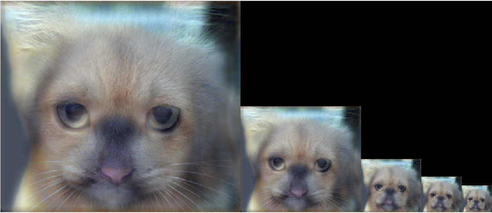
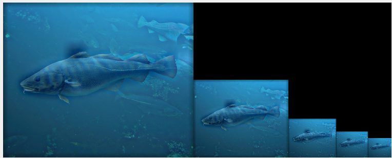
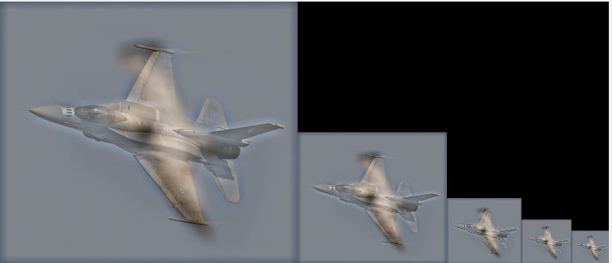
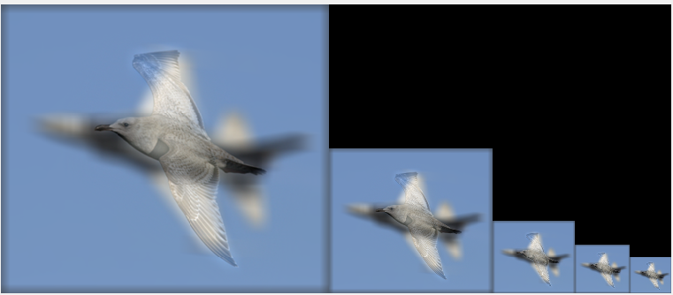

Program 1
Febuary 11, 2019
A hybrid image is the sum of a low-pass filtered version of a first image and a high-pass filtered version of a second image. We must tune a free parameter for each image pair to control how much high frequency to remove from the first image and how much low frequency to leave in the second image. This is called the “cut-off frequency”. The paper suggests to use two cut-off frequencies, one tuned for each image, and you are free to try this too.
Here are some of the image pyramids that this program generates
   